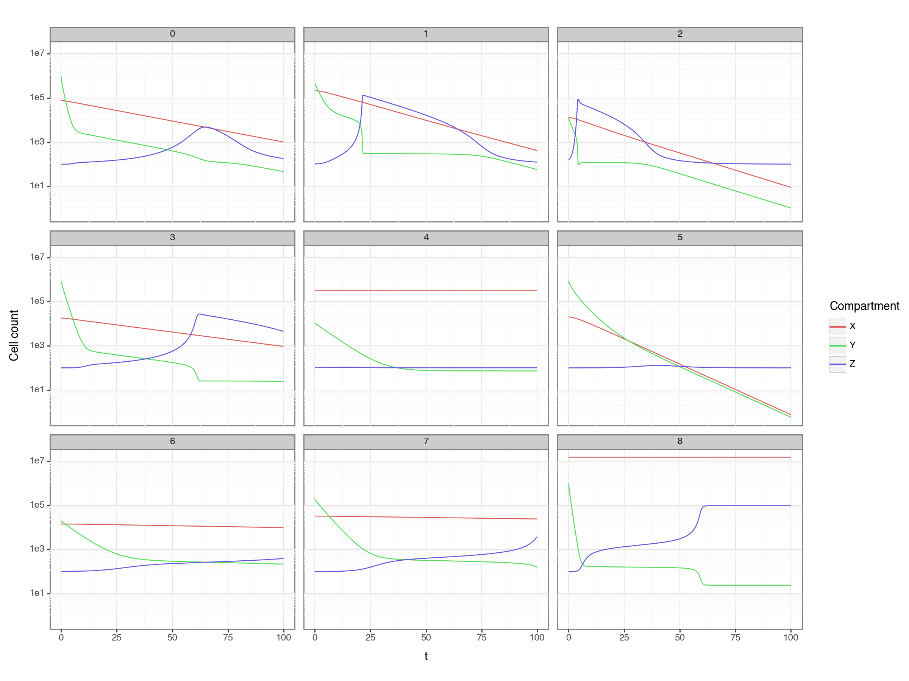

import pandas as pd
import plotnine as p9
import numpy as np
from scipy.integrate import odeint
from plotnine import ggplot, aes, geom_point, geom_line, facet_wrap
p9.theme_set(p9.theme_bw())
def dict_to_tuple(x):
return tuple(x.values())Elena’s paper
Python
Elena’s paper
Started to play with Elena’s paper: Link to the paper
def get_p_and_y0(df, d = 1, i = 1):
pp = df.iloc[i].to_dict()
p = {key: pp[key] for key in ['Pz', 'Pyx', 'Pxy', 'TKI', 'Kz', 'Ky', 'Py', 'm', 'rz', 'a']}
p['d'] = d
y_0 = {key: pp[key] for key in ['X(0)', 'Y(0)', 'Z(0)']}
return p, y_0
params_df = pd.read_csv('ParameterSets.csv')
p, y0 = get_p_and_y0(params_df, 1)
params_df| Unnamed: 0 | PatID | Pz | Pyx | Pxy | TKI | Kz | Ky | Py | m | rz | a | X(0) | Y(0) | Z(0) | HalfingDoseTime | CessationTime | |
|---|---|---|---|---|---|---|---|---|---|---|---|---|---|---|---|---|---|
| 0 | 1 | 002-095 | 918.212826 | 0.003674 | 0.043994 | 1.953862 | 217.221302 | 1000000.0 | 0.973924 | 0.0001 | 200 | 2 | 78382.854581 | 938723.700292 | 100.048931 | 61.545205 | 73.545205 |
| 1 | 2 | 002-109 | 23083.129866 | 0.032012 | 0.066389 | 0.500185 | 1870.604823 | 1000000.0 | 0.001000 | 0.0001 | 200 | 2 | 216186.368403 | 448352.579679 | 102.642186 | 120.295890 | 132.295890 |
| 2 | 3 | 002-123 | 10092.226454 | 0.082485 | 0.081357 | 0.687386 | 796.735702 | 1000000.0 | 0.003026 | 0.0001 | 200 | 2 | 13010.901299 | 12832.979836 | 164.393817 | 61.709589 | 73.709589 |
| 3 | 4 | 003-133 | 345.298359 | 0.000673 | 0.030023 | 0.897634 | 62.137465 | 1000000.0 | 0.200074 | 0.0001 | 200 | 2 | 17996.873639 | 802776.842858 | 100.021511 | 96.164384 | 108.164384 |
| 4 | 5 | 003-141 | 306.696917 | 0.001098 | 0.000037 | 0.675628 | 1272.917683 | 1000000.0 | 0.527287 | 0.0001 | 200 | 2 | 312316.113662 | 10632.126673 | 101.442441 | 118.882192 | 130.882192 |
| ... | ... | ... | ... | ... | ... | ... | ... | ... | ... | ... | ... | ... | ... | ... | ... | ... | ... |
| 73 | 74 | 218-105 | 227.900944 | 0.000629 | 0.021212 | 0.540216 | 44.762743 | 1000000.0 | 0.371630 | 0.0001 | 200 | 2 | 9617.275519 | 324397.497286 | 100.035139 | 117.172603 | 129.172603 |
| 74 | 75 | 218-113 | 707.776619 | 0.000947 | 0.082137 | 0.936809 | 109.291797 | 1000000.0 | 0.004144 | 0.0001 | 200 | 2 | 10082.133001 | 874421.411603 | 100.040488 | 52.898630 | 64.898630 |
| 75 | 76 | 230-140 | 4355.988897 | 0.003152 | 0.081907 | 1.065387 | 898.457630 | 1000000.0 | 0.470243 | 0.0001 | 200 | 2 | 33711.053422 | 876082.957124 | 100.249225 | 76.832877 | 88.832877 |
| 76 | 77 | 230-142 | 1445.428430 | 0.000161 | 0.000878 | 0.794767 | 323.840047 | 1000000.0 | 0.679967 | 0.0001 | 200 | 2 | 33011.628854 | 180303.529279 | 100.402444 | 60.263014 | 72.263014 |
| 77 | 78 | 364-068 | 99103.442607 | 0.021462 | 0.144025 | 1.115338 | 2699.192860 | 1000000.0 | 0.289565 | 0.0001 | 200 | 2 | 133376.913958 | 895060.326195 | 105.860525 | 45.073973 | 57.073973 |
78 rows × 17 columns
def cml_model(y, t, Pz, Pyx, Pxy, TKI, Kz, Ky, Py, m, rz, a, d):
X, Y, Z = y
dX = Pyx * Y - Pxy * X
dY = Pxy * X - Pyx * Y + Py * (1 - Y / Ky) * Y - m * Z * Y - d * TKI * Y
dZ = rz + Z * Pz * (Y / (Kz ** 2 + Y ** 2)) - a * Z
return (dX, dY, dZ)ii = tuple(range(0, len(params_df) - 1))
ii = tuple(range(0, 9))
t = np.arange(0.0, 100, 0.01)
result_list = []
for i in ii:
p, y0 = get_p_and_y0(params_df, i = i)
result = odeint(cml_model,
dict_to_tuple(y0),
t,
args=dict_to_tuple(p))
df = pd.DataFrame(result, columns = ['X', 'Y', 'Z'])
df = df.assign(t = t)
df['PatID'] = i
result_list.append(df)
result = pd.concat(result_list, ignore_index=True)
result['PatID'] = result['PatID'].astype('category')result_long = pd.melt(result,
id_vars = ['t', 'PatID'],
value_vars = ['X', 'Y', 'Z'],
value_name = 'cell_count')
(
ggplot(result_long, aes('t', 'cell_count', color = 'variable')) +
geom_line() +
facet_wrap('PatID')+ p9.scale_y_continuous(trans='log10') +
p9.theme(figure_size=(12,9)) +
p9.labs(y='Cell count', color = 'Compartment')
)

(
ggplot(result, aes('t', 'Y', color = 'PatID')) +
geom_line() + p9.scale_y_continuous(trans='log10')
)def LRATIO(Y, KY=1e6):
return Y / (Y + 2 * (KY - Y))
result['LRATIO'] = LRATIO(result["Y"])
(
ggplot(result, aes('t', 'LRATIO', color='PatID')) +
geom_line() + p9.scale_y_continuous(trans='log10',
breaks=(1, 1e-1, 1e-2, 1e-3, 1e-4, 1e-5, 1e-6),
labels=('MR0 (100%)', 'MR1 (10%)', 'MR2 (1%)', 'MR3 (0.1%)', 'MR4 (0.01%)', 'MR5 (0.001%)', 'MR6 (0.0001)')) +
p9.theme(figure_size=(10, 7))
)